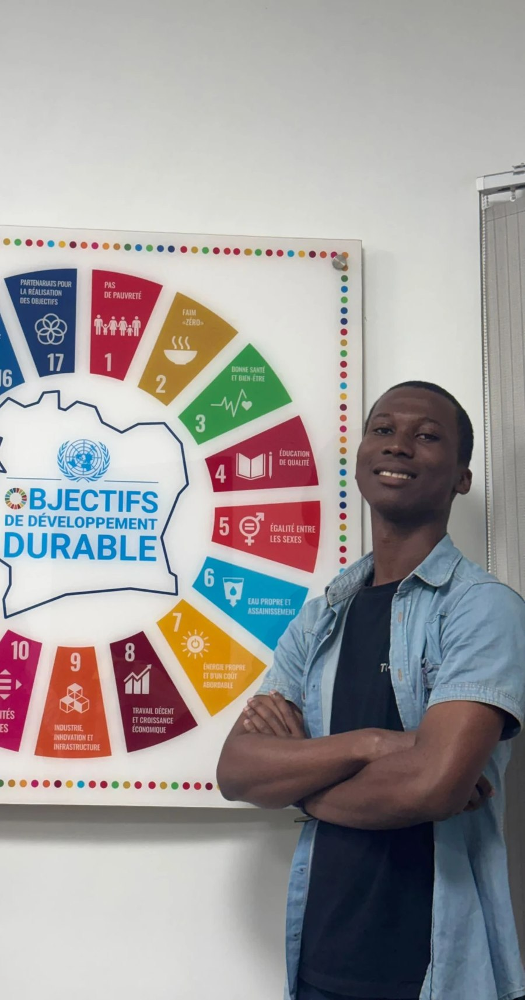
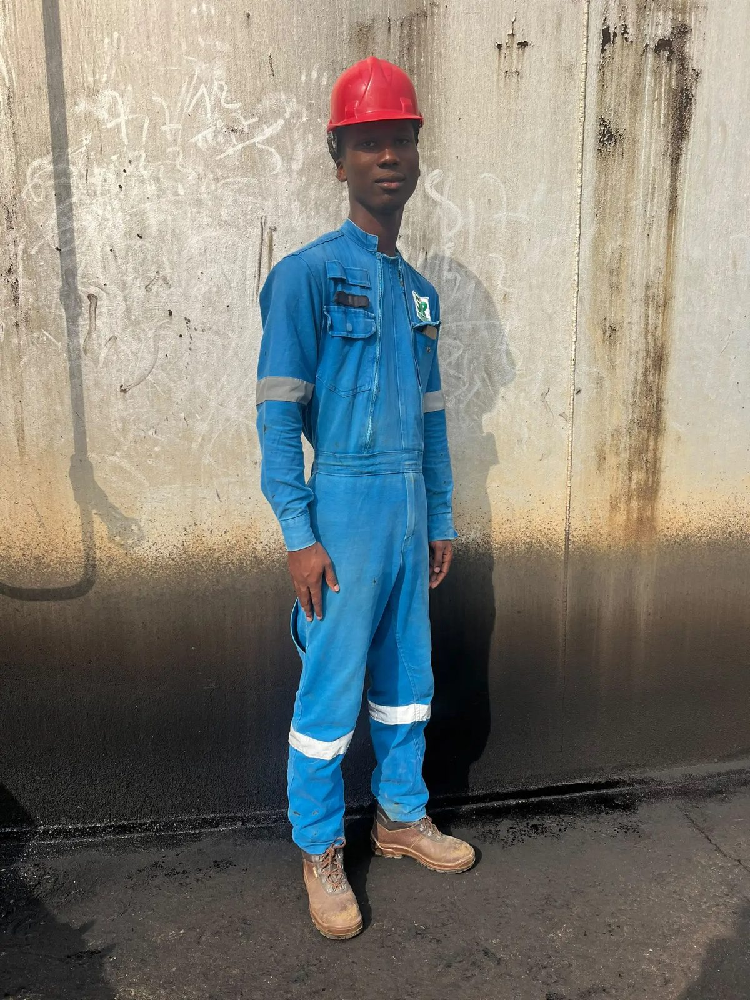
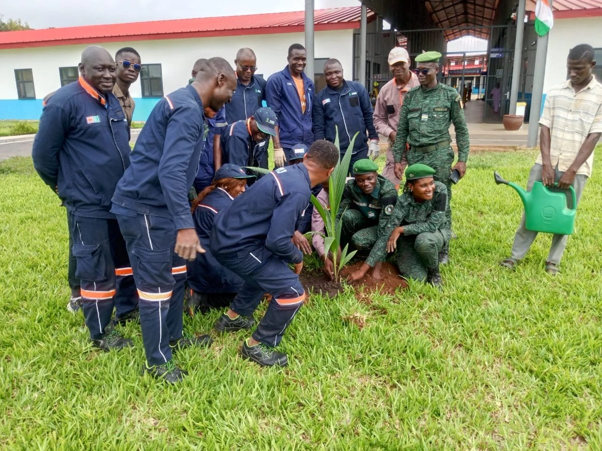
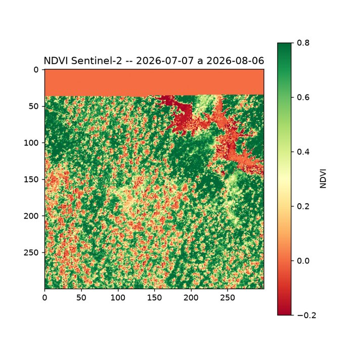
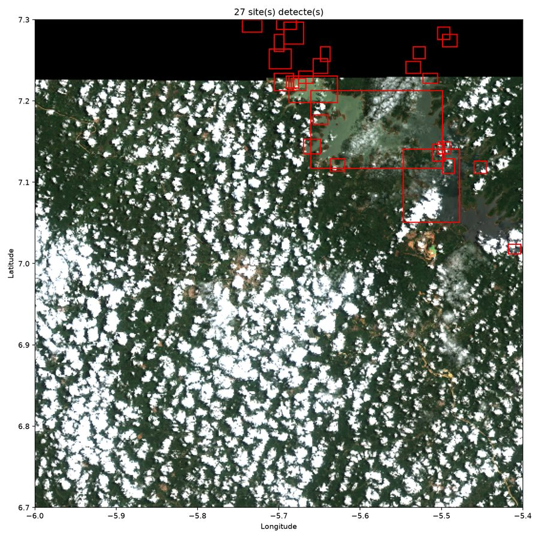
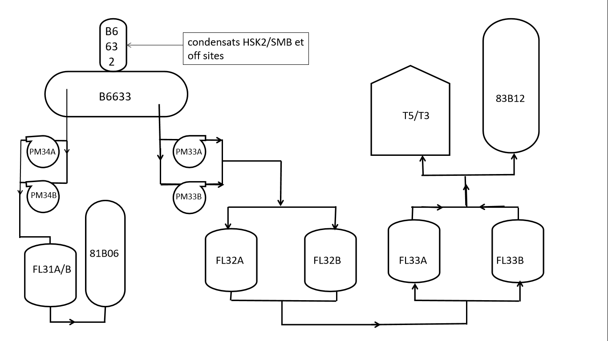
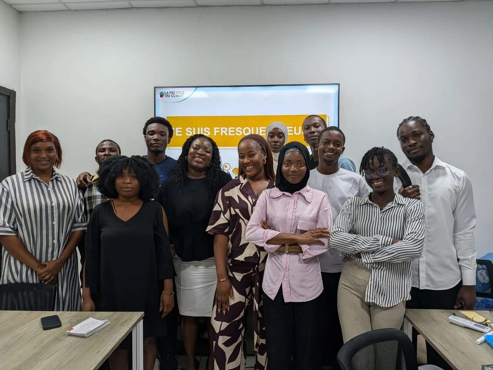
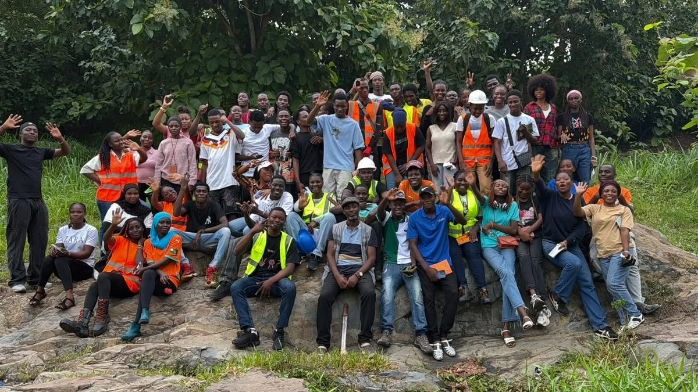
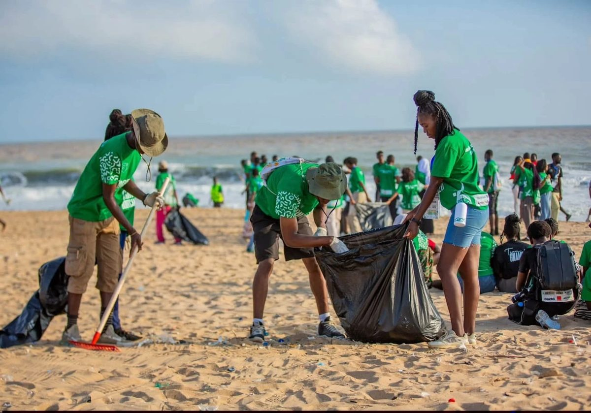
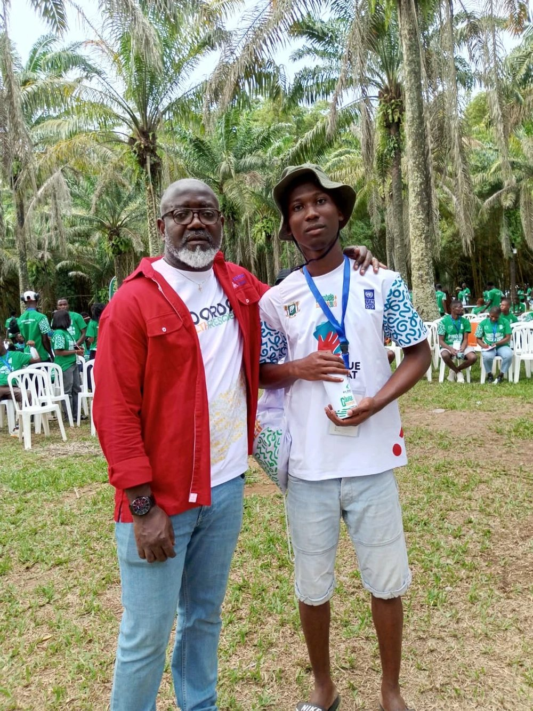

Licence Professionnelle en Géologie, Mines, Pétrole et Environnement — option Eau & Gestion de l'Environnement, à l'UTT Loko.

Étudiant en troisième année de licence professionnelle en Géologie, Mines, Pétrole et Environnement, option eau et gestion de l'environnement, à l'UTT Loko d'Abidjan, je souhaite me spécialiser dans le domaine de l'environnement et de la gestion des ressources naturelles. Motivé, rigoureux et curieux, je cherche à approfondir mes compétences de terrain et à contribuer à des projets de développement durable.








